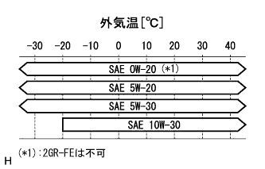
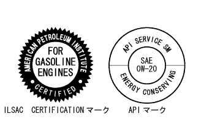

Fluids and Coolant Specified Fluids and Capacities |
 |
| Engine Type | Oil change only Capacity [L] | Oil and oil filter Capacity when replaced [L] |
|---|---|---|
| 2AZ-FE | 4.1 | 4.3 |
| 2GR-FE | 5.7 | 6.1 |
 |
Gasoline Engine Oil (Specified Lubricant)
| Product Name | Quality Grade | Viscosity Grade |
|---|---|---|
| Toyota Genuine Motor Oil | API SM/ILSAC GF-4 | SAE 0W-20 |
| Toyota Genuine Motor Oil | API SM/ILSAC GF-4 | SAE 5W-30 |
| Toyota Genuine Motor Oil | API SM/ILSAC GF-4 | SAE 10W-30 |
| Toyota Genuine Motor Oil | API SL | SAE 5W-20 |
| Item [Model] | Capacity [L] (Reference) | Specified Lubricant |
|---|---|---|
| Coolant [2AZ-FE] | 6.2 | Toyota Genuine Super LLC |
| Coolant [2GR-FE] | 8.7 | ↑ |
| Automatic transaxle fluid [K112] | 8.7 (including differential) | Toyota Genuine CVT Fluid TC |
| Automatic transaxle fluid [K112F] | 8.7 (including differential) | ↑ |
| Automatic transaxle fluid [U660E] | 6.5 (including differential) | Toyota Genuine Auto Fluid WS |
| Transfer oil [GF1A] | 0.45 | Toyota Genuine Hypoid Gear Oil SX (API GL-5, SAE90) |
| Rear differential oil [FD13B] | 0.5 | Toyota Genuine Hypoid Gear Oil SX (API GL-5, SAE90) |
| Brake Fluid | - | Toyota Genuine Brake Fluid2500H |
| A/C Compressor Oil | - | ND-OIL8 |